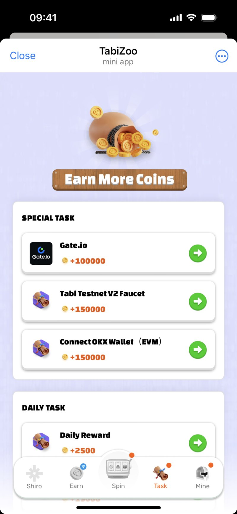

Tabi
Chain
把“消费公链”从技术叙事，推进成用户入口、原生应用、生态分发与激励治理的完整产品系统。



公链不缺能力，缺的是用户为什么进来
TabiChain 的公开定位是面向消费者的区块链，并以 Poly-Apps、注意力经济和用户分发作为核心组成。对产品团队而言，挑战不是继续解释吞吐量或兼容性，而是回答普通用户如何进入、为什么留下，以及应用如何获得分发。
用户入口、账户、原生应用、生态合作与激励治理如果分别建设，就会形成彼此不连贯的功能；真正的工作是把它们组织成一套可持续的产品循环。
负责产品系统，不把团队成绩写成个人独作
我担任高级产品经理 / 产品负责人，负责消费公链定位下的产品架构、TabiApp 账户体验、生态入口、原生应用以及 veTABI 等激励治理方向，并与研发、设计、运营和生态团队共同推进。
本案例中的参与量与销售额属于项目和团队结果；我的个人贡献重点是产品路径、模块关系、需求与机制设计，以及跨团队落地。
从“链有什么”转向“用户如何行动”
用消费场景定义公链，而不是堆叠技术名词
产品表达围绕用户可参与的应用、社交与娱乐体验展开，让技术能力服务于更直观的进入理由。
把账户体验作为生态产品的共同入口
账户不只是地址管理，而是承接身份、资产、任务和应用关系的连续体验，降低不同产品之间的切换成本。
用原生应用验证用户分发闭环
通过 TabiZoo、GG Meme 等原生产品观察进入、参与、传播和转化，再将经验反哺生态应用的产品要求。
让激励机制服务长期关系
将短期参与与更长期的权益、治理和生态协作连接，避免只用一次性奖励定义产品价值。
入口、应用、分发与治理组成同一个循环
产品结构可以概括为四层：账户与身份承接用户；原生应用验证行为和场景；生态与用户分发帮助更多应用获得触达；激励治理沉淀长期参与关系。每一层都不是孤立功能，而是上下游的条件。
增长速度与系统质量必须同时看
结果证明入口有效，也暴露长期命题
团队公开记录中，TabiZoo 上线 3 天获得 300 万参与，累计参与超过 1500 万；GG Meme 销售额超过 420 ETH。这些结果说明原生应用能够快速建立用户进入与传播路径。
更重要的复盘是：爆发式参与只是生态产品的第一阶段。长期价值仍取决于账户连续性、应用质量、开发者供给和激励机制是否形成稳定循环。这个案例让我更明确，增长机制必须和产品系统一起设计。
证据边界：项目定位与 TabiZoo 信息可在官方文档中核对；参与量、销售额和我的职责来自公开履历记录。数字作为团队结果呈现，不代表个人独立贡献。